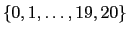

Brian Tanner :: brian@tannerpages.com
This document describes how to use RL-Glue when each of the agent, environment, and experiment program is written in C/C++. This scenario is also known as the direct-compile scenario, because all of the components can be compiled together into a single executable program. This contrasts with the more flexible way to use RL-Glue, where the rl_glue executable server acts as a bridge for agents, environments, and experiment programs written in any of: Python, Lisp, Matlab, Java, or C/C++.
For general information and motivation about RL-Glue, please read the RL-Glue overview documentation. This technical manual is about explaining the finer details of installing RL-Glue and creating direct-compile projects, so we won't rehash all of the high level RL-Glue ideas.
This software project is licensed under the Apache-2.01 license. We're not lawyers, but our intention is that this code should be used however it is useful. We'd appreciate to hear what you're using it for, and to get credit if appropriate.
This project has a home here:
http://glue.rl-community.org
All of the official downloads of the RL-Glue Core can be found here:
http://code.google.com/p/rl-glue-ext/wiki/RLGlueCore
You may also check the code out directly from the subversion: svn checkout http://rl-glue.googlecode.com/svn/trunk rl-glue
This distribution is simply the rl_glue.exe executable socket server, precompiled for Windows, and the GlueOverview and TechnicalManual PDF files. Using this distribution does not allow you to install the C/C++ codec, because that codec requires access to certain shared libraries not included in this binary package.
If you use this distribution, you can start rl_glue.exe a number of ways. You can just double-click it, for example. This will probably be very tedious in the long run.
You should probably put rl_glue.exe into your $PATH, so that you can easily find it either from the Windows COMMAND program, or from within other programs like Matlab. By default, the Windows/System folder is in the path, so if you put rl_glue.exe in that folder, you will be able to start it easily. If you put it elsewhere you should consider updating your Windows path to include it. There are instructions on the Internet that can help you with this, for example these.
Once rl_glue.exe is in your $PATH, you can start it from the windows COMMAND program by typing:
C:\DOCUME~1\ADMINI~1>rl_glue.exe
This distribution is an installer package bundled into a Mac Disk Image (.dmg). This is a graphical installer application and should be fairly self explanatory. This distribution comes with an uninstall script that can be used to remove this codec from your system.
The steps are:
>$ ./configure >$ make >$ sudo make install
Provided everything goes well, the headers have now been installed to /usr/local/include the libs to /usr/local/lib, and rl_glue to /usr/local/bin.
NOTE: On many Linux systems, /usr/local is not actually on the library and header search paths by default, but /usr surely is. In this case, you may want to follow the instructions in Section 1.4.2 system with -prefix=/usr.
If you don't have sudo or root access on the target machine, you can install RL-Glue in your home directory (or other directory you have access to). If you install to a custom location, you will need to set your CFLAGS and LDFLAGS variables appropriately when compiling your projects. See Section 2.3 for more information.
For example, maybe we want to install RL-Glue to /Users/joe/glue. The commands are:
>$ ./configure --prefix=/Users/joe/glue >$ make >$ make install
Provided everything goes well, the headers, libraries, binaries have been respectively installed to
/Users/joe/glue/include
/Users/joe/glue/lib
/Users/joe/glue/bin
>$ ./configure >$ sudo make uninstall
This will remove all of the headers, libraries, and binaries from /usr/local.
>$ ./configure --prefix=/Users/joe/glue >$ make uninstall
That's it! This will remove all of the headers, libraries, and binaries from /Users/joe/glue.
You could also just delete the glue directory, but that may also remove related files and libraries in addition to RL-Glue (codec support files and such that you may have installed).
The skeleton contains all of the bare-bones plumbing that is required to create an agent/environment/experiment with this codec and might be a good starting point for creating your own components.
The mines-sarsa-sample contains a fully functional tabular Sarsa learning algorithm, a discrete-observation grid world problem, and an experiment program that can run these together and gather results. More details below in Section 2.8.
In the following sections, we will describe the skeleton project. Running and using the mines-sarsa-sample is analogous.
We'll start by explaining how to compile and run the experiment, then we'll talk in more detail about each part.
>$ cd examples/skeleton/ >$ make >$ ./SkeletonExperiment
We will spend a little bit talking about how to compile the project, because not everyone is comfortable with using a Makefile. To compile the project from the command line, you could do:
>$ cc *.c -lrlglue -lrlutils -o SkeletonExperiment
It might be useful to break this down a little bit:
At this point, we've compiled the project, now we just have to run the experiment:
>$ ./SkeletonExperiment
You should see output like the following if it worked:
>$ ./SkeletonExperiment Experiment starting up! RL_init called, the environment sent task spec: VERSION RL-Glue-3.0 PROBLEMTYPE episodic DISCOUNTFACTOR 1.0 OBSERVATIONS INTS (0 20) ACTIONS INTS (0 1) REWARDS (-1.0 1.0) EXTRA skeleton_environment(C/C++) by Brian Tanner. ----------Sending some sample messages---------- Agent responded to "what is your name?" with: my name is skeleton_agent! Agent responded to "If at first you don't succeed; call it version 1.0" with: I don't know how to respond to your message Environment responded to "what is your name?" with: my name is skeleton_environment! Environment responded to "If at first you don't succeed; call it version 1.0" with: I don't know how to respond to your message ----------Running a few episodes---------- Episode 0 100 steps 0.000000 total reward 0 natural end Episode 1 90 steps -1.000000 total reward 1 natural end Episode 2 56 steps 1.000000 total reward 1 natural end Episode 3 100 steps 0.000000 total reward 0 natural end Episode 4 96 steps -1.000000 total reward 1 natural end Episode 5 1 steps 0.000000 total reward 0 natural end Episode 6 106 steps 1.000000 total reward 1 natural end ----------Stepping through an episode---------- First observation and action were: 10 1 ----------Summary---------- It ran for 204 steps, total reward was: -1.000000
That's all there is to it! You just ran a direct-compile RL-Glue experiment! Congratulations!
To do it on the command line:
>$ CFLAGS=-I/Users/joe/glue/include LDFLAGS=-L/Users/joe/glue/lib make
That might turn out to be quite a hassle to type those flags all the time while you are developing. In that case, you can either update the Makefile to include these flags, or set an environment variable. If you are using the bash shell you can export the environment variables:
>$ export CFLAGS=-I/Users/joe/glue/include >$ export LDFLAGS=-L/Users/joe/glue/lib >$ make
In some cases, you may be able to compile and link your programs without incident, but you receive shared library loading errors when you try to execute them, as mentioned in Gotchas! (Section 2.7.2).
In these cases, you may also have to set LD_LIBRARY_PATH (Linux) or DYLD_LIBRARY_PATH (OS X) environment variables, like:
>$ export LD_LIBRARY_PATH=/Users/joe/glue/lib
In some cases (64-bit linux looks in /usr/local/lib64?) you may have to use this approach even when RL-Glue is installed in the default location:
>$ export LD_LIBRARY_PATH=/usr/local/lib
When you open a new terminal window, all of these environment variables will be lost unless you put the appropriate export lines in your shell startup script.
The pertinent files are:
examples/skeleton/SkeletonAgent.c
This agent does not learn anything and randomly chooses integer action 0 or 1.
The Skeleton agent is very simple and well documented, so we won't spend any more time talking about it in these instructions. Please open it up and take a look.
The pertinent files are:
examples/skeleton_environment/SkeletonEnvironment.c
This environment is episodic, with 21 states, labeled . States {0, 20} are terminal and return rewards of {-1, +1} respectively. The other states return reward of 0. There are two actions, {0, 1}. Action 0 decrements the state number, and action 1 increments it. The environment starts in state 10.
The Skeleton environment is very simple and well documented, so we won't spend any more time talking about it in these instructions. Please open it up and take a look.
The pertinent files are:
examples/skeleton_experiment/SkeletonExperiment.c
This experiment runs RL_Episode a few times, sends some messages to the agent and environment, and then steps through one episode using RL_step.
The Skeleton experiment is very simple and well documented, so we won't spend any more time talking about it in these instructions. Please open it up and take a look.
>$ ./SkeletonExperiment: error while loading shared libraries: librlglue-3:0:0.so.1: cannot open shared object file: No such file or directory
If this happens, the operating system might have an alternate search path, and might not be looking in /usr/local/lib for libraries. You can troubleshoot this problem by doing:
>$ LD_DEBUG=libs ./SkeletonExperimentIf you see that /usr/local/lib is not in the search path, you may want to add it to your library search path using LDFLAGS or LD_LIBRARY_PATH. See Section 2.3 for more information.
The task specification string4 is manually created because there is not yet a task spec builder for C/C++.
The SARSA agent parses the task specification string using the C/C++ task spec parser. This agent can receive special messages from the experiment program to pause/unpause learning, pause/unpause exploring, save the current value function to a file, and load the the value function from a file.
The sample experiment then tells the agent to save the value function to a file, and then resets the experiment (and agent) to initial conditions. After verifying that the agent's initial policy is bad, the experiment tells the agent to load the value function from the file. The agent is evaluated again using this previously-learned value function, and performance is dramatically better.
Finally, the experiment sends a message to specify that the environment should use a fixed (instead of random) starting state, and runs the agent from that fixed start state for a while.
Sometimes you will want run the rl_glue server on a port other than the default (4096) either because of firewall issues, or because you want to run multiple instances on the same machine.
In these cases, you can tell the rl_glue executable to listen on a custom port using the environment variable RLGLUE_PORT.
For example, try the following code:
> $ RLGLUE_PORT=1025 rl_glue
That command could give output like:
RL-Glue Version 3.0-RC1a, Build 882 RL-Glue is listening for connections on port=1025
If you don't like typing it every time, you can export it so that the value will be set for future calls to rl_glue in the same session:
> $ export RLGLUE_PORT=1025 > $ rl_glue
Remember, on most *nix systems, you need superuser privileges to listen on ports lower than 1024, so you probably want to pick one higher than that.
/******************** UNSAFE *******************/
char* task_spec_copy=0;
void agent_init(const char* task_spec){
/*
Not making a copy, just keeping a pointer to the data
Compiler will even complain
*/
task_spec_copy=task_spec;
}
const action_t* agent_start(const observation_t* this_observation) {
/*
Behavior undefined. Who knows if the string the task_spec
was originally pointing to still exists?
*/
printf("Task spec we saved is: %s\n",task_spec_copy);
...
/******************** SAFE *******************/
char* task_spec_copy=0;
void agent_init(const char* task_spec){
/*
Allocating space (need length+1 for the terminator character)
*/
task_spec_copy=(char *)calloc(strlen(task_spec)+1, sizeof(char));
strcpy(task_spec_copy,task_spec);
}
const action_t* agent_start(const observation_t* this_observation) {
/*
This is fine, because even if
the task_spec was freed, we have a copy.
*/
printf("Task spec we saved is: %s\n",task_spec_copy);
...
/******************** UNSAFE *******************/
observation_t* last_observation=0;
const action_t* agent_start(const observation_t *this_observation) {
/*
Unsafe, points last_observation to this_observation's arrays!
Compiler will even complain (that's new)
*/
last_observation=this_observation;
...
/******************** SAFE *******************/
observation_t* last_observation=0;
const action_t* agent_start(const observation_t *this_observation) {
/*
This helper function allocates a new struct and
copies from this_observation!
*/
last_observation=duplicateRLStructToPointer(this_observation);
...
Alternatively, if we already had a pointer to a observation_t.
/************** Alternate 1 SAFE *************/
/*Somewhere else in the code*/
observation_t* last_observation=allocateRLStructPointer(0,0,0);
...
const action_t* agent_start(const observation_t *this_observation) {
/*
This helper function allocates memory inside last_observation
if necessary and copies this_observation into it!
*/
replaceRLStruct(this_observation,last_observation);
...
Or, if you don't like working with pointers:
/************** Alternate 2 SAFE *************/
observation_t last_observation={0}; /* Not a pointer */
const action_t* agent_start(const observation_t *this_observation) {
/*
This helper function allocates memory inside last_observation
if necessary and copies this_observation into it!
*/
replaceRLStruct(this_observation,&last_observation);
...
Remember that any memory that you allocate within an agent, environment, or experiment the old fashioned way malloc/new or using the convenience functions in <rlglue/utils/C/RLStruct_util.h> should be released by you in the appropriate cleanup function.
The Skeleton examples do the appropriate thing in this respect: the intArrays that need to be dynamically allocated are allocated in the _init methods, and then the memory is released in the _cleanup methods.
/******************** UNSAFE *******************/
const char* agent_message(const char* inMessage) {
char theBuffer[1024];
sprintf(theBuffer,"this is an example response message\n");
/*
This returns the address of a local variable
bad idea and compiler will complain
*/
return theBuffer;
}
/**************** UNSAFE (MEMORY LEAK) ***************/
const char* agent_message(const char* inMessage) {
char theBuffer[1024];
char* returnString=0;
sprintf(theBuffer,"this is an example response message\n");
returnString=(char *)calloc(strlen(theBuffer)+1,sizeof(char));
strcpy(returnString,theBuffer);
/*
Memory leak... every time this function is called
a new returnString is allocated, but nobody will
ever clean them up!
*/
return returnString;
}
/******************** SAFE *******************/
char* agentReturnString=0; /*Global Variable */
const char* agent_message(const char* inMessage) {
char theBuffer[1024];
sprintf(theBuffer,"this is an example response message\n");
/*
This code will free the memory on subsequent calls
*/
if(agentReturnString!=0){
free(agentReturnString);
agentReturnString=0;
}
agentReturnString=(char *)calloc(strlen(theBuffer)+1,sizeof(char));
strcpy(agentReturnString,theBuffer);
return agentReturnString;
}
RL-Glue uses TCP/IP connections between all of the components. RL-Glue operates in lock-step, not asynchronously. There is no time-out mechanism, RL-Glue will wait for an agent or environment to return from a remote function call indefinitely unless the connection is terminated. This is by design. By default, RL-Glue listens (and codecs connect to) port 4096 on localhost.
In the future, an advanced technical guide will be available that describes how to write a codec to allow the language of your choice to connect to RL-Glue over sockets. This will be an integral part of the growth and standardization of RL-Glue to a growing number of platforms and languages. Until then, please contact us directly on the RL-Glue mailing list for further information:
http://groups.google.com/group/rl-glue
It's not impossible! At least one enterprising individual, Gabor Balazs, has written a codec (LISP) without any direct help from the core RL-Glue team.
Reward : double
Terminal Flag : int
Message : char*
Task_Spec : char*
typedef struct
{
unsigned int numInts;
unsigned int numDoubles;
unsigned int numChars;
int* intArray;
double* doubleArray;
char* charArray;
} rl_abstract_type_t;
The specific names and definitions of the structure types are:
typedef rl_abstract_type_t observation_t;
typedef rl_abstract_type_t action_t;
The composite structure types are:
typedef struct{
const observation_t *observation;
const action_t *aaction;
} observation_action_t;
typedef struct{
double reward;
const observation_t *observation;
int terminal;
} reward_observation_terminal_t;
typedef struct {
double reward;
const observation_t *observation;
const action_t *action;
int terminal;
} reward_observation_action_terminal_t;
observation_t
action_t
observation_action_t
reward_observation_terminal_t
reward_observation_action_terminal_t
void agent_init(const char* task_spec); const action_t* agent_start(const observation_t* observation); const action_t* agent_step(double reward, const observation_t* observation); void agent_end(double reward); void agent_cleanup(); const char* agent_message(const char* message);
const char* env_init(); const observation_t* env_start(); const reward_observation_terminal_t* env_step(const action_t* action); void env_cleanup(); const char* env_message(const char * message);
const char* RL_init(); const observation_action_t *RL_start(); const reward_observation_action_terminal_t *RL_step(); void RL_cleanup(); const char* RL_agent_message(const char* message); const char* RL_env_message(const char* message); double RL_return(); int RL_num_steps(); int RL_num_episodes(); int RL_episode(unsigned int num_steps);
#include <rlglue/utils/C/RLStruct_util.h>
Prototypes with documentation can be found here.
void replaceRLStruct(const rl_abstract_type_t *src, rl_abstract_type_t *dst);
void clearRLStruct(rl_abstract_type_t *dst);
void freeRLStructPointer(rl_abstract_type_t *dst);
void reallocateRLStruct(rl_abstract_type_t *dst,
const unsigned int numInts,
const unsigned int numDoubles,
const unsigned int numChars);
void allocateRLStruct(rl_abstract_type_t *dst,
const unsigned int numInts,
const unsigned int numDoubles,
const unsigned int numChars);
rl_abstract_type_t *allocateRLStructPointer(const unsigned int numInts,
const unsigned int numDoubles,
const unsigned int numChars);
rl_abstract_type_t *duplicateRLStructToPointer(const rl_abstract_type_t *src);
>$ ./configure >$ make >$ sudo make install
Old: #include <RL_common.h> New: #include <rlglue/Agent_common.h>
Old: #include <RL_common.h> New: #include <rlglue/Environment_common.h>
Old: #include <RL_glue.h> New: #include <rlglue/RL_glue.h>
Old: #include <RL_network.h> New: #include <rlglue/network/RL_network.h>
Instead it'll be:
observation_t observation;
We think the latter is easier to read. We've also stopped using typdef for reward, task_spec. A first beta of RL-Glue 3.0 and the C/C++ codec had new types message_t and terminal_t: these have been removed also. Feedback from the community was that people preferred to see the actual types instead of these surrogates.
The first beta of RL-Glue 3.0 also had a file called legacy_types.h that would allow you to use the old type names. This has been removed as of Release Candidate 4 (RC4) because of the major overhaul from structures to pointers (see Section 7.5). Sorry.
typedef struct Reward_observation_t{
Reward r;
Observation o;
int terminal;
} Reward_observation;
Unfortunately, it is very inconsistent that the reward and observation are r and o respectively, while the terminal flag is terminal. With the second pass of RL-Glue 3.0 we are moving to a more verbose naming scheme: we will fully name each member of these composite structs as reward, action, observation, or terminal.
Many of the old function prototypes in RL-Glue passed structures by value. A typical example:
Action agent_step(Reward r, Observation o);
In this example, Action and Observation are structs, and Reward typdef'd to double. In the
first revision of RL-Glue 3.0 we updated to:
action_t agent_step(reward_t r, observation_t o);
Notice in this version that it might not be intuitive whether r, the reward, is a structure or a primitive type. Safety is also not obvious: can the agent expect that the returned action will be changed by RL-Glue? Should the agent free the dynamic arrays in o when finished with it?
With the second pass of updates, we've taken the next leap to:
const action_t* agent_step(double reward, const observation_t* observation);
We feel it is more clear with this prototype that the agent should not try to change the observation, and that RL-Glue will not change the action. You can easily defeat these safety checks by casting away the const, but at least the compiler will yell at you if you accidentally try to break the rules.
We have made these sorts of changes to all functions that accept or return any derivative of rl_abstract_type_t.
The online FAQ may be more current than this document, which may have been distributed some time ago.
We're happy to answer any questions about RL-Glue. Of course, try to search through previous messages first in case your question has been answered before.
> $ rl_glue --help
RL-Glue Version 3.0-RC1a, Build 882
rl_glue version = 3.0-RC1a
build number = 882
Usage: $:>rl_glue
By default rl_glue listens on port 4096.
To choose a different port, set environment variable RLGLUE_PORT.
This tells you that the name of the release you have installed is 3.0-RC1a, and the specific build from subversion is r882.
We have seen this on a fresh Linux Ubuntu machine. Try installing g++:
> $ sudo apt-get install g++
Brian Tanner has since grabbed the torch and has continued to develop RL-Glue and the codecs.
Special thanks to Scott Livingston for creating the new C/C++ task spec parser.
Revision Number: $Rev: 980 $ Last Updated By: $Author: brian@tannerpages.com $ Last Updated : $Date: 2009-02-09 16:51:57 -0700 (Mon, 09 Feb 2009) $ $URL: https://rl-glue.googlecode.com/svn/trunk/docs/TechnicalManual.tex $
This document was generated using the LaTeX2HTML translator Version 2002-2-1 (1.71)
Copyright © 1993, 1994, 1995, 1996,
Nikos Drakos,
Computer Based Learning Unit, University of Leeds.
Copyright © 1997, 1998, 1999,
Ross Moore,
Mathematics Department, Macquarie University, Sydney.
The command line arguments were:
latex2html TechnicalManual.tex -split 0 -dir tech_html -mkdir -title 'RL-Glue 3.0 Technical Details' -local_icons -math
The translation was initiated by Brian Tanner on 2009-02-13